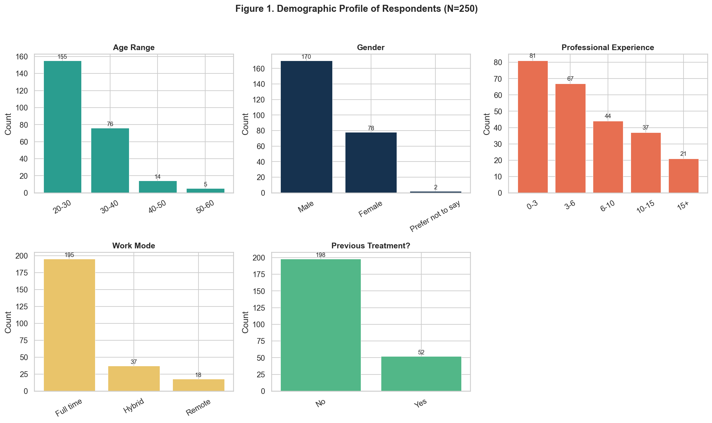
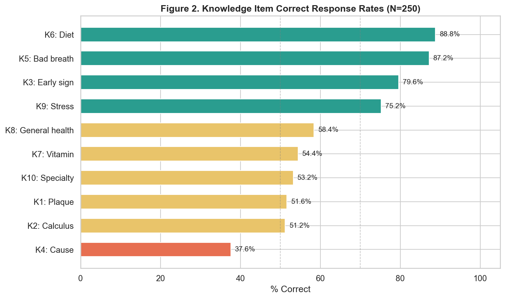
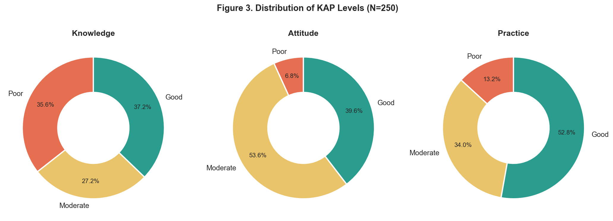
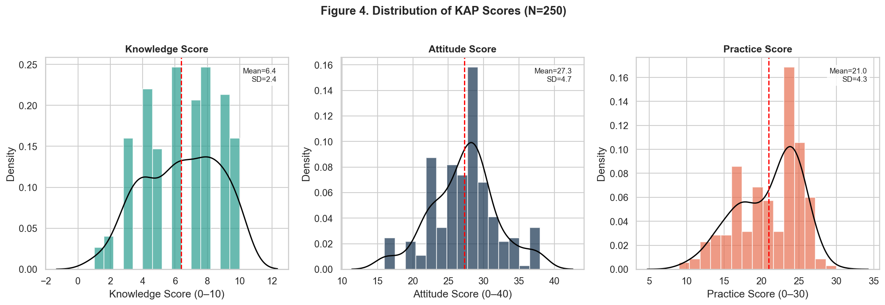
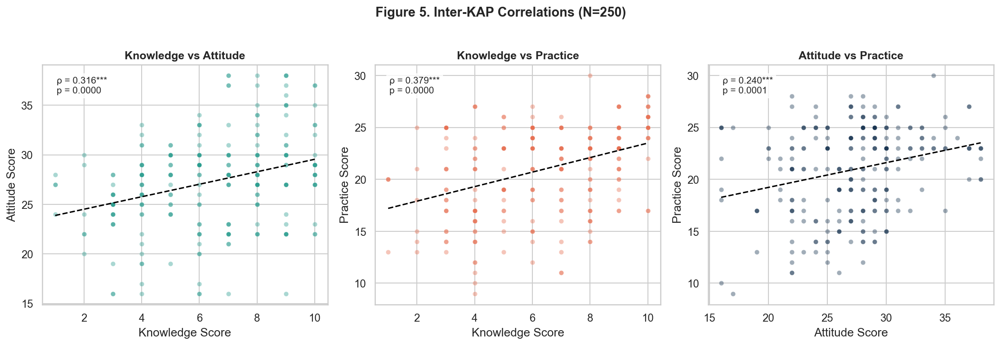
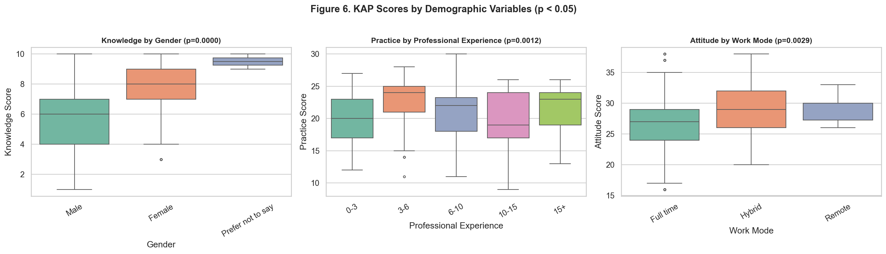

A total of 250 IT professionals from Bengaluru participated in this study. The majority of respondents were in the 20-30 years age group (62.0%), and 68.0% were Male. Regarding professional experience, the distribution across categories is shown in Table 1. 78.0% worked full-time. Only 20.8% had received prior periodontal treatment.
| Variable | Category | n | % |
|---|---|---|---|
| Age Range | 20-30 years | 155 | 62.0 |
| 30-40 years | 76 | 30.4 | |
| 40-50 years | 14 | 5.6 | |
| 50-60 years | 5 | 2.0 | |
| Gender | Male | 170 | 68.0 |
| Female | 78 | 31.2 | |
| Prefer not to say | 2 | 0.8 | |
| Other | 0 | 0.0 | |
| Professional Experience | 0-3 years | 81 | 32.4 |
| 3-6 years | 67 | 26.8 | |
| 6-10 years | 44 | 17.6 | |
| 10-15 years | 37 | 14.8 | |
| 15+ years | 21 | 8.4 | |
| Work Mode | Full time | 195 | 78.0 |
| Hybrid | 37 | 14.8 | |
| Work from home (Remote) | 18 | 7.2 | |
| Previous Treatment | No | 198 | 79.2 |
| Yes | 52 | 20.8 |

The mean knowledge score was 6.37 ± 2.36 out of 10. The highest correct response rate was observed for K6 (Diet) at 88.8%, while the lowest was for K4 (Cause) at 37.6%. Table 2 provides the item-level breakdown.
| Item | Topic | Correct Answer | n Correct | % Correct |
|---|---|---|---|---|
| K1 | Plaque | A soft film of bacteria and food debris on the teeth | 129 | 51.6 |
| K2 | Calculus | Hard mineral deposit on the teeth | 128 | 51.2 |
| K3 | Early sign | Bleeding gums while brushing | 199 | 79.6 |
| K4 | Cause | Dental plaque accumulation | 94 | 37.6 |
| K5 | Bad breath | Gum disease | 218 | 87.2 |
| K6 | Diet | Processed sugary foods and drinks | 222 | 88.8 |
| K7 | Vitamin | Vitamin C | 136 | 54.4 |
| K8 | General health | It can contribute to heart disease and diabetes | 146 | 58.4 |
| K9 | Stress | Development of gum disease due to inflammation | 188 | 75.2 |
| K10 | Specialty | Periodontics | 133 | 53.2 |

The mean attitude score was 27.26 ± 4.65 out of 40. Items A5 and A8 were reverse-scored as they represent negative attitudes. Table 3 shows the response distribution for each attitude statement.
| Item | Statement | SD | D | A | SA | Mean ± SD |
|---|---|---|---|---|---|---|
| A1 | Neglecting oral hygiene develops gum disease. | 41 (16.4%) | 82 (32.8%) | 83 (33.2%) | 44 (17.6%) | 2.52 ± 0.97 |
| A2 | Bleeding gums should not be ignored. | 25 (10.0%) | 64 (25.6%) | 117 (46.8%) | 44 (17.6%) | 2.72 ± 0.87 |
| A3 | Attending workplace awareness programs will improve gum health. | 14 (5.6%) | 81 (32.4%) | 121 (48.4%) | 34 (13.6%) | 2.70 ± 0.77 |
| A4 | Maintaining oral hygiene is equally important as maintaining physical fitness. | 32 (12.8%) | 49 (19.6%) | 120 (48.0%) | 49 (19.6%) | 2.74 ± 0.92 |
| A5 | Visiting a dentist is necessary only when I have pain or discomfort.* | 37 (14.8%) | 132 (52.8%) | 59 (23.6%) | 22 (8.8%) | 2.74 ± 0.82 |
| A6 | Poor gum health can negatively affect my confidence or social interactions. | 14 (5.6%) | 65 (26.0%) | 123 (49.2%) | 48 (19.2%) | 2.82 ± 0.80 |
| A7 | Oral hygiene aids like floss or mouthwash can be used if recommended by a dentist. | 17 (6.8%) | 66 (26.4%) | 136 (54.4%) | 31 (12.4%) | 2.72 ± 0.77 |
| A8 | Oral hygiene maintenance is time consuming and difficult to follow.* | 35 (14.0%) | 126 (50.4%) | 68 (27.2%) | 21 (8.4%) | 2.70 ± 0.81 |
| A9 | Workplace stress can have an impact on my gum and oral health. | 17 (6.8%) | 68 (27.2%) | 134 (53.6%) | 31 (12.4%) | 2.72 ± 0.77 |
| A10 | Investing in preventive dental care is better than spending on treatment later. | 20 (8.0%) | 48 (19.2%) | 123 (49.2%) | 59 (23.6%) | 2.88 ± 0.86 |
* Reverse-scored items (A5, A8): scores are inverted so that higher values indicate a more positive attitude.
The mean practice score was 20.96 ± 4.27 out of 30. Table 4 details the response distribution and mean score for each practice item.
| Item | Topic | Option A | Option B | Option C | Option D | Mean Score ± SD |
|---|---|---|---|---|---|---|
| P1 | Brushing frequency | 141 (56.4%) | 7 (2.8%) | 98 (39.2%) | 4 (1.6%) | 2.14 ± 1.00 |
| P2 | Brushing direction | 91 (36.4%) | 34 (13.6%) | 34 (13.6%) | 91 (36.4%) | 1.73 ± 1.10 |
| P3 | Brush softness | 138 (55.2%) | 44 (17.6%) | 64 (25.6%) | 4 (1.6%) | 2.26 ± 0.90 |
| P4 | Brushing timing | 111 (44.4%) | 5 (2.0%) | 127 (50.8%) | 7 (2.8%) | 2.04 ± 0.99 |
| P5 | Brushing duration | 20 (8.0%) | 181 (72.4%) | 35 (14.0%) | 14 (5.6%) | 2.51 ± 0.92 |
| P6 | Post-meal rinse | 151 (60.4%) | 75 (30.0%) | 13 (5.2%) | 11 (4.4%) | 2.46 ± 0.81 |
| P7 | Cleaning aids | 104 (41.6%) | 43 (17.2%) | 73 (29.2%) | 30 (12.0%) | 1.12 ± 0.97 |
| P8 | Brush replacement | 159 (63.6%) | 53 (21.2%) | 6 (2.4%) | 32 (12.8%) | 2.38 ± 0.90 |
| P9 | Dental visit | 40 (16.0%) | 98 (39.2%) | 23 (9.2%) | 89 (35.6%) | 1.72 ± 1.15 |
| P10 | Risk habits | 15 (6.0%) | 203 (81.2%) | 22 (8.8%) | 10 (4.0%) | 2.60 ± 0.88 |
Using Bloom's cut-off points (Poor <50%, Moderate 50–69%, Good ≥70%), the distribution of KAP levels was as follows: knowledge (Good: 37.2%, Moderate: 27.2%, Poor: 35.6%); attitude (Good: 39.6%, Moderate: 53.6%, Poor: 6.8%); practice (Good: 52.8%, Moderate: 34.0%, Poor: 13.2%). See Table 5 and Figure 3.
| Domain | Poor (<50%) | Moderate (50–69%) | Good (≥70%) |
|---|---|---|---|
| Knowledge | 89 (35.6%) | 68 (27.2%) | 93 (37.2%) |
| Attitude | 17 (6.8%) | 134 (53.6%) | 99 (39.6%) |
| Practice | 33 (13.2%) | 85 (34.0%) | 132 (52.8%) |

Table 6 summarizes the descriptive statistics for each KAP domain. The median knowledge score was 6, attitude score was 28, and practice score was 22.
| Domain | Possible Range | Mean | SD | Median | Min | Max |
|---|---|---|---|---|---|---|
| Knowledge | 0–10 | 6.37 | 2.36 | 6.0 | 1 | 10 |
| Attitude | 0–40 | 27.26 | 4.65 | 28.0 | 16 | 38 |
| Practice | 0–30 | 20.96 | 4.27 | 22.0 | 9 | 30 |

Spearman's correlation analysis revealed a weak positive correlation between knowledge and attitude (ρ=0.316, p=<0.001), a weak positive correlation between knowledge and practice (ρ=0.379, p=<0.001), and a weak positive correlation between attitude and practice (ρ=0.240, p=<0.001). This suggests that higher knowledge is associated with more positive attitudes and better practices.
| Pair | Spearman ρ | p-value | Sig. |
|---|---|---|---|
| Knowledge vs Attitude | 0.316 | 0.0000 | *** |
| Knowledge vs Practice | 0.379 | 0.0000 | *** |
| Attitude vs Practice | 0.240 | 0.0001 | *** |

Statistically significant differences (p<0.05) were observed for: knowledge scores by Gender (p=0.0000); practice scores by Professional Experience (p=0.0012); attitude scores by Work Mode (p=0.0029). No significant differences were found for other demographic comparisons. Table 8 provides the full results.
| Variable | Score | Group Mean±SD | Test | Statistic | p-value | Sig. |
|---|---|---|---|---|---|---|
| Age Range | Knowledge | 20-30 years: 6.3±2.5; 30-40 years: 6.5±2.0; 40-50 years: 6.1±2.7; 50-60 years: 6.2±0.4 | Kruskal-Wallis H | 0.5 | 0.9153 | |
| Attitude | 20-30 years: 28.0±3.9; 30-40 years: 25.9±5.7; 40-50 years: 26.6±5.0; 50-60 years: 26.8±3.6 | Kruskal-Wallis H | 7.5 | 0.0568 | ||
| Practice | 20-30 years: 21.3±4.3; 30-40 years: 20.4±4.3; 40-50 years: 20.7±3.4; 50-60 years: 18.2±4.4 | Kruskal-Wallis H | 4.6 | 0.2019 | ||
| Gender | Knowledge | Male: 5.7±2.2; Female: 7.7±2.0; Prefer not to say: 9.5±0.7 | Kruskal-Wallis H | 42.1 | 0.0000 | *** |
| Attitude | Male: 26.7±4.5; Female: 28.4±4.8; Prefer not to say: 30.0±0.0 | Kruskal-Wallis H | 5.7 | 0.0570 | ||
| Practice | Male: 20.7±4.3; Female: 21.5±4.2; Prefer not to say: 22.0±0.0 | Kruskal-Wallis H | 1.8 | 0.4100 | ||
| Professional Experience | Knowledge | 0-3 years: 6.4±2.3; 3-6 years: 6.5±2.7; 6-10 years: 6.1±2.1; 10-15 years: 7.0±2.1; 15+ years: 5.2±2.2 | Kruskal-Wallis H | 8.6 | 0.0712 | |
| Attitude | 0-3 years: 27.7±4.3; 3-6 years: 27.9±3.8; 6-10 years: 26.5±5.4; 10-15 years: 26.6±5.8; 15+ years: 26.2±4.5 | Kruskal-Wallis H | 3.5 | 0.4837 | ||
| Practice | 0-3 years: 20.1±4.1; 3-6 years: 22.7±3.9; 6-10 years: 20.5±4.7; 10-15 years: 20.0±4.4; 15+ years: 21.0±4.0 | Kruskal-Wallis H | 18.0 | 0.0012 | ** | |
| Work Mode | Knowledge | Full time: 6.3±2.4; Hybrid: 7.1±2.2; Work from home (Remote): 5.8±1.8 | Kruskal-Wallis H | 4.9 | 0.0847 | |
| Attitude | Full time: 26.8±4.7; Hybrid: 28.6±5.0; Work from home (Remote): 29.4±2.1 | Kruskal-Wallis H | 11.7 | 0.0029 | ** | |
| Practice | Full time: 21.0±4.5; Hybrid: 21.1±3.1; Work from home (Remote): 19.9±3.7 | Kruskal-Wallis H | 2.1 | 0.3545 | ||
| Previous Treatment | Knowledge | No: 6.5±2.4; Yes: 6.1±2.1 | Mann-Whitney U | 5741.5 | 0.1979 | |
| Attitude | No: 27.3±4.3; Yes: 27.3±5.7 | Mann-Whitney U | 4505.5 | 0.1651 | ||
| Practice | No: 20.7±4.3; Yes: 21.8±3.9 | Mann-Whitney U | 4408.5 | 0.1096 |
